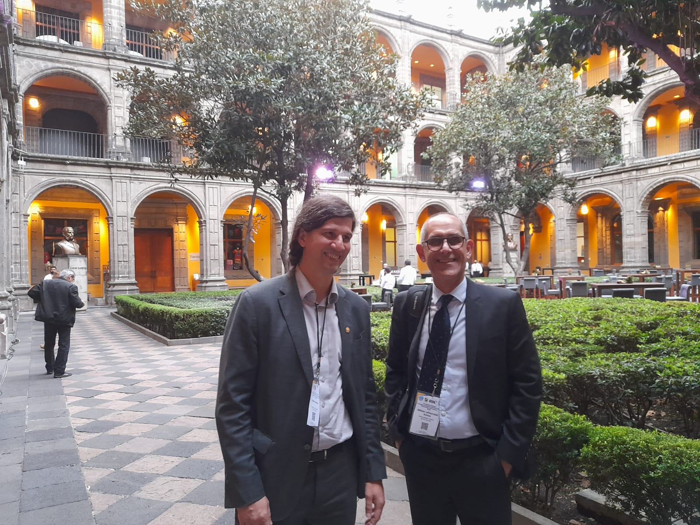
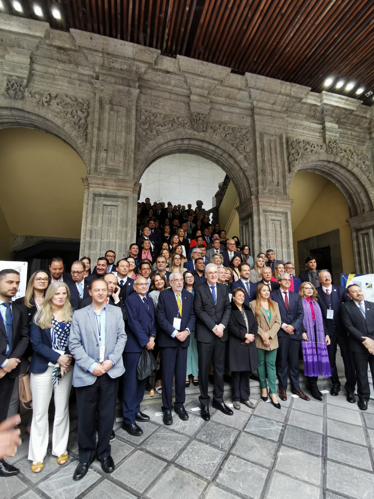

FURG participates in the XV General Assembly and XII GCUB International Seminar in Mexico
The event was held in Mexico from October 19 to 21, 2022.
The Federal University of Rio Grande (FURG), represented by the Rector Danilo Giroldo and the Secretary of International Relations, Prof. Milton Lafourcade Asmus, participated in the XV General Assembly and XII International Seminar of the International Cooperation Group of Brazilian Universities – GCUB, which took place at the Universidad Nacional Autónoma de México – UNAM, in Mexico City, Mexico.
GCUB is a non-profit association aimed at promoting joint academic, scientific, and cultural activities among participating institutions.

The Rector of FURG, Danilo Giroldo, and the Secretary of International Relations, Milton Lafourcade Asmus, pose for a photo at the XV General Assembly and XII International Seminar of GCUB. Disclosure.
This year the event was held as a result of the alliance between the International Cooperation Group of Brazilian Universities – GCUB, the Universidad Nacional Autónoma de México – UNAM, the Unión de Universities of Latin America and the Caribbean – UDUAL and the Asociación Nacional de Universities and Higher Education Institutions – ANUIES and had as its central theme "Universities and Global Problems: Commitments, Changes, and Legacies in the 21st Century".
The XV General Assembly's main objective is to be a meeting for the board to present the management report of the previous year, in this case, 2021, in addition to electing a new Board and the new Fiscal Council, which takes place every two years. On October 19, the Rector of the Federal University of Pará (UFPA), Emmanuel Zagury Tourinho, was elected as the new President of GCUB, and the Rector of FURG, Danilo Giroldo, as an Alternate member of the Fiscal Council of GCUB.
On this date, the III Meeting of Brazil-Mexico Rectors was also held, within the proposal of the XII International Seminar, in which Danilo participated as moderator. In the meeting, cooperation in the field of research in strategic areas between the higher education institutions of these countries was discussed. Prof. Milton Lafourcade Asmus also acted on the meeting as rapporteur in the Special Thematic Panel on the "Experience of using digital tools in Higher Education".
The main discussions addressed at the XII International Seminar were issues related to the current situation of Higher Education in Latin America and the Caribbean, the potential for greater cooperation in networks between universities in this geographic region, and the main cooperation and mobility programs.
The highlight of this meeting was the launch of the new GCUB International Mobility Program (GCUB-Mob), which offers more than 785 Master's and Doctoral scholarships in 50 Brazilian universities for programs that will start in 2023. FURG stood out as one of the universities that most offered vacancies in different courses of this program because it awarded 13 scholarships for masters and ten for doctorates.
The Secretary for International Relations, Milton Lafourcade Asmus, considers it important for FURG to participate in events like this one so that the institution can update itself on the recent contexts of internationalization. Thus, it obtains important information to establish potential partnerships with other universities, through conversations, agreements, and exchanges of proposals. In addition to being a great opportunity to publicize the University by being present at these events, making it possible to attract potential partners to establish international cooperation.

Representatives of Higher Education institutions, diplomats, government authorities, and representatives of international organizations pose for a photo during the Assembly. Disclosure.
The General Assembly and the International Seminar of the International Cooperation Group of Brazilian Universities are annually attended by representatives of Higher Education institutions, diplomats, government authorities, and representatives of international organizations from approximately 40 countries, located on five continents.
-------------------------------------Versão em Português------------------------------------------
O evento foi sediado no México nos dias 19 à 21 de outubro de 2022.
A Universidade Federal do Rio Grande (FURG), representada pelo Reitor Danilo Giroldo e o Secretário de Relações Internacionais, Prof. Milton Lafourcade Asmus, participou da XV Assembleia Geral e XII Seminário Internacional do Grupo de Cooperação Internacional de Universidades Brasileiras – GCUB, que ocorreu na Universidad Nacional Autónoma de México – UNAM, na Cidade do México, México.
O GCUB é uma associação sem fins lucrativos voltada para promoção de atividades acadêmicas, científicas e culturais conjuntas entre as instituições participantes.
O Reitor da FURG, Danilo Giroldo, e o Secretário de Relações Internacionais, Milton Lafourcade Asmus, posam para foto na XV Assembleia Geral e XII Seminário Internacional do GCUB. Divulgação.
Este ano o evento foi realizado como resultado da aliança entre o Grupo de Cooperação Internacional de Universidades Brasileiras – GCUB, a Universidad Nacional Autónoma de México – UNAM, a Unión de Universidades de América Latina y el Caribe – UDUAL e a Asociación Nacional de Universidades e Instituciones de Educación Superior – ANUIES e teve como tema central as "Universidades e Problemas Globais: Compromissos, Mudanças e Legados no Século XXI".
A XV Assembleia Geral tem como principal objetivo ser um encontro para que a diretoria apresente o relatório de gestão do ano anterior, neste caso de 2021, além de eleger uma nova Diretoria e o novo Conselho Fiscal, que ocorre a cada dois anos. No dia 19 de outubro, o Reitor da Universidade Federal do Pará (UFPA), Emmanuel Zagury Tourinho, foi eleito como novo Presidente do GCUB e o Reitor da FURG, Danilo Giroldo, como membro Suplente do Conselho Fiscal do GCUB.
Nesta data também foi realizado o III Encontro de Reitores(as) Brasil-México, dentro da proposta do XII Seminário Internacional, no qual Danilo participou como moderador e se discutiu a cooperação no campo da pesquisa em áreas estratégicas entre as instituições de ensino superior destes países. O Prof. Milton Lafourcade Asmus atuou ainda no dia 19 como relator no Painel Temático Especial sobre a "Experiência de uso de ferramentas digitais na Educação Superior".
As principais discussões abordadas no XII Seminário Internacional foram questões relacionadas a situação atual da Educação de Ensino Superior na América Latina e Caribe, as potencialidades de uma maior cooperação em redes entre universidades desta região geográfica e os principais programas de cooperação e mobilidade.
O destaque deste encontro foi o lançamento do novo Programa GCUB de Mobilidade Internacional (GCUB-Mob), que oferece mais de 785 bolsas de Mestrado e Doutorado em 50 universidades brasileiras para programas que iniciarão em 2023. A FURG se destacou como uma das universidades que mais ofereceu vagas em diferentes cursos deste programa porque concedeu 13 bolsas de mestrado e dez de doutorado.
O Secretário de Relações Internacionais, Milton Lafourcade Asmus, considera que é importante que a FURG participe de eventos como este para que a instituição se atualize dos contextos recentes da internacionalização. Assim, obtém informações importantes para estabelecer potenciais parcerias com outras universidades, por meio das conversas, acordos e trocas de propostas. Além de ser uma grande oportunidade para realizar a divulgação da Universidade por estar presente nestes eventos, possibilitando a captação de potenciais parceiros para estabelecer cooperações internacionais.
Representantes de instituições de Educação Superior, diplomatas, autoridades governamentais e representantes de organizações internacionais posam para foto durante a Assembleia. Divulgação.
A Assembleia Geral e o Seminário Internacional do Grupo de Cooperação Internacional de Universidades Brasileiras contam anualmente com a participação de representantes de instituições de Educação Superior, diplomatas, autoridades governamentais e representantes de organizações internacionais de aproximadamente 40 países, localizados nos cinco continentes.